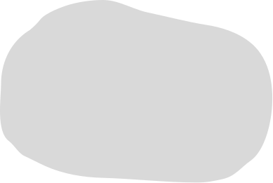

Globala mål 15: Ekosystem och biologisk mångfald
Denna webbplats fokucerar på att framhäva hur Sverige som land arbetar med just detta globala mål. Speciellt delmål 15.5. bla bla bla. Lägg till mer text här.


Rödlistade djur i Sverige
Vart femte år presenterar Artdatabanken en lista över de mest hotade arterna i Sverige, varje art blir tilldelad en rödlistekategori som talar om hur hotad arten är från ej tillämplig till utdöd. Vi har tagit fram en lista på de djur vi anser är populära i Sverige, som är med på rödlistan 2020.
1. Fjällräv: Starkt hotad
2. Järv: Sårbar
3. Lodjur: Sårbar
4. Brunbjörn: Nära hotad